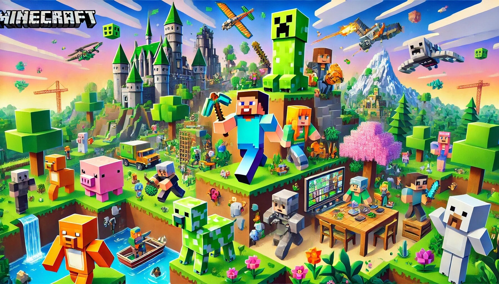

Minecraft Download: A Gateway to Endless Adventures
If you’ve ever wanted to dive into a world where your imagination is the only limit, then downloading Minecraft is your golden ticket. This game isn’t just a pastime; it’s a phenomenon that has captivated millions of players worldwide since its release. Whether you're a seasoned gamer or someone exploring gaming for the first time, Minecraft offers something truly special.
Why Download Minecraft?
1. A Game for Everyone
Minecraft’s charm lies in its simplicity and universality. Whether you're a kid trying to build a treehouse or an adult reliving your childhood dream of constructing a castle, Minecraft welcomes all. Minecraft download is like getting access to a blank canvas—you decide what masterpiece to create.
Plus, there’s no right or wrong way to play. Want to spend hours mining for diamonds? Go for it. Feel like building a farm full of llamas? You do you. There’s no judgment in this pixelated paradise.
2. Creativity Unleashed
Think of Minecraft as your personal Lego universe, but with unlimited pieces and no risk of stepping on a stray block at 2 AM. The creative mode allows you to build anything you can dream up—from skyscrapers to replicas of Hogwarts. Who needs an art degree when you can just flex your creativity in Minecraft?
Downloading Minecraft is like opening the door to a virtual world where every crazy idea you’ve ever had can come to life. Want to create a working roller coaster? Done. How about recreating your entire neighborhood? Easy (well, sort of). The possibilities are endless.
3. Adventure Awaits
For those who crave excitement, Minecraft's survival mode is the ultimate thrill. Picture this: it’s nighttime, you’re armed with nothing but a wooden sword, and you hear the eerie hiss of a creeper sneaking up behind you. It’s moments like these that make Minecraft an adrenaline-pumping experience.
Every download comes with a world full of biomes to explore, from lush jungles to snowy tundras. You’ll face challenges like battling mobs (zombies, skeletons, and even Ender Dragons!) and gathering resources to survive. Each new adventure feels fresh, keeping you hooked for hours.
4. Learn Without Trying
Here’s a sneaky bonus: Minecraft makes learning fun. From architecture and design to basic coding with Minecraft mods, the game is a silent teacher. Kids have unknowingly improved their problem-solving skills and spatial awareness just by playing. Adults, too, can find themselves sharpening their planning and management abilities as they juggle resources and build complex structures.
5. Multiplayer Madness
Playing Minecraft solo is great, but sharing the experience with friends is even better. Whether you’re teaming up to defeat the Ender Dragon or competing to see who can build the coolest treehouse, Minecraft’s multiplayer mode adds a whole new level of fun.
The game’s online servers are like digital communities where players from all over the world connect. You can explore unique worlds, participate in massive build challenges, or even engage in some friendly PvP (Player vs. Player). Just remember, no griefing—Minecraft karma is real!
The Download Process: Easier Than You Think
Downloading Minecraft is as simple as ordering pizza online. Whether you’re on a PC, console, or mobile device, the game is just a few clicks away. Head over to the official Minecraft website or app store, select your version (Java Edition, Bedrock Edition, or Pocket Edition), and you’re good to go.
Pro Tip: Always download from official sources to avoid shady knock-offs that could turn your computer into a very expensive paperweight.
Final Thoughts: Download It Already!
If you’re still on the fence about downloading Minecraft, let this be your sign. It’s more than just a game; it’s a gateway to creativity, adventure, and endless fun. Whether you’re battling mobs in survival mode, building your dream home in creative mode, or connecting with friends in multiplayer, there’s no shortage of things to do.
So go ahead, hit that download button. Who knows? Your next big adventure might just be a block away. And remember, if anyone gives you grief about spending too much time playing, just tell them you’re “developing transferable skills.” It’s technically true!